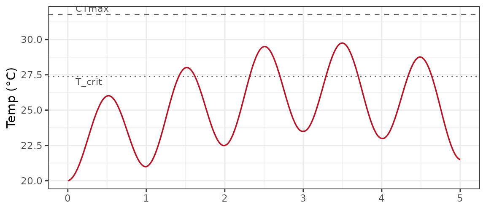
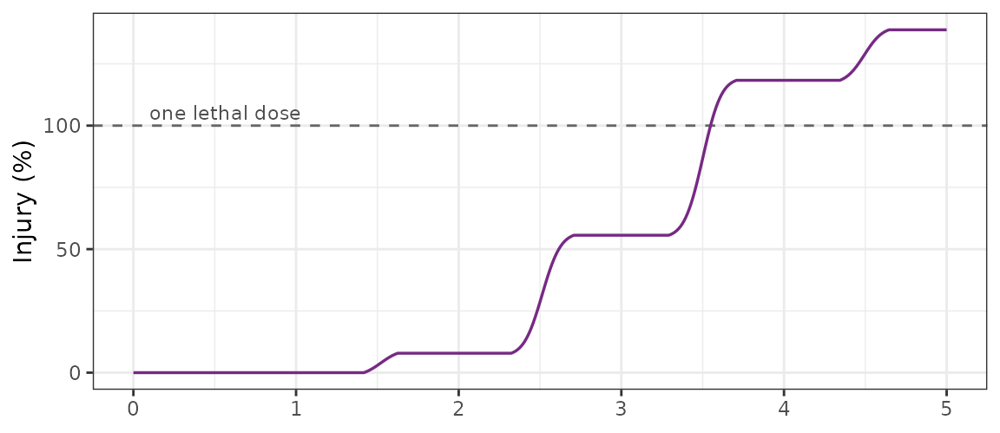
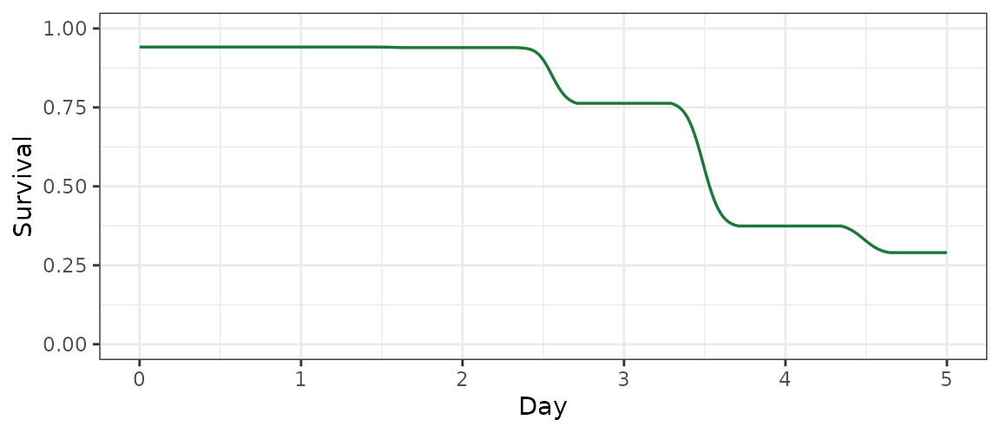
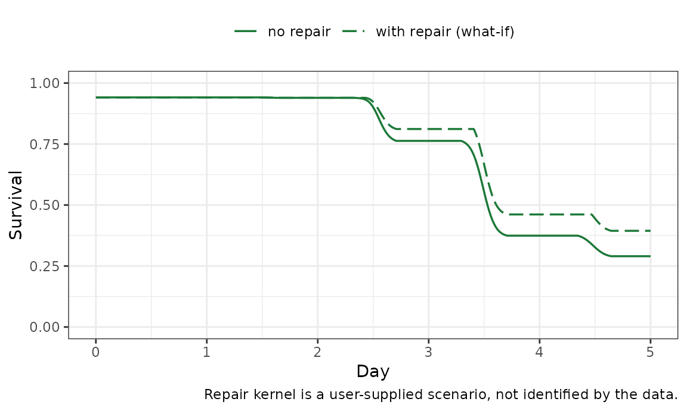
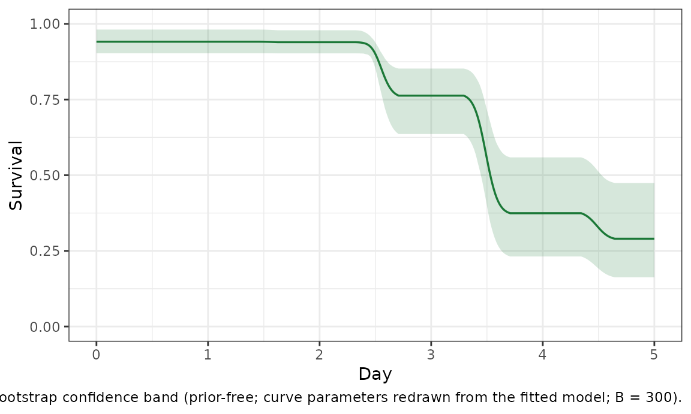

This vignette is for an applied thermal biologist who has fitted a
thermal-load-sensitivity (TLS) curve and now wants to ask a forward
question: if an organism experiences this temperature
time-series, how much lethal damage accumulates, and how does survival
fall? It mirrors the heat-injury panel of the bayesTLS
manuscript (their “Heat injury and survival” figure) but is computed
entirely from the freqTLS maximum-likelihood fit — no Stan,
no Bayesian comparison, because heat injury here is a
deterministic prediction off the fitted curve, not a
new model.
What heat-injury prediction is (and is not)
predict_heat_injury() accumulates thermal damage along a
temperature trace and reads survival back off the already-fitted 4PL. At
each temperature T the fitted curve gives a lethal time
LT(T); the instantaneous damage rate is its reciprocal,
1 / LT(T), in lethal doses per time unit.
Cumulative dose is the forward-Euler integral of that rate over the
trace, and survival is the 4PL evaluated at the accumulated dose. One
lethal dose (dose = 1, or 100% on the
injury axis) is the thermal load that drives survival to a chosen target
— by default the project-default relative threshold,
the curve midpoint (low + up) / 2.
This is the maximum-likelihood analogue of
bayesTLS::predict_heat_injury(). The boundary is deliberate
and matches the sibling-package split:
-
freqTLSpredicts injury from a curve it has already fitted. - Fitting injury or repair dynamics as a model — estimating
damage and recovery rates from data — is a
bayesTLSconcern.freqTLSdoes not fit them.
Everything below is a transform of one fitted CTmax /
z (plus the shape low, up,
k), so the uncertainty in the prediction is exactly the
confidence-interval uncertainty in those estimates — which we propagate
with a prior-free bootstrap, never a posterior.
Fit the curve
We use the vendored brown-shrimp lethal assay
(shrimp_lethal), the same dataset as the
bayesTLS shrimp case study: a beta-binomial 4PL with
constant shape and a one-hour reference time.
data(shrimp_lethal)
shrimp_std <- standardize_data(
shrimp_lethal,
temp = "Temperature_assay", duration = "Duration_exposure_hours",
n_total = "N_individuals_after_trial", mortality = "Mortality_after_trial",
duration_unit = "hours"
)
# The heat-injury helpers take the engine fit; fit_4pl()$fit is that engine fit.
fit <- fit_4pl(shrimp_std, t_ref = 1, family = "beta_binomial", quiet = TRUE)$fit
ctmax <- get_ctmax(fit)$estimate
z <- get_z(fit)$estimate
up <- tidy_parameters(fit)$estimate[tidy_parameters(fit)$parameter == "up"]
c(CTmax = round(ctmax, 2), z = round(z, 2), upper_asymptote = round(up, 3))
#> CTmax z upper_asymptote
#> 31.770 2.190 0.941The fitted survival ceiling is up
0.94: even brief benign exposures do not return survival to a full 100%.
Heat-injury trajectories will therefore start at that fitted
ceiling, not at 1 — an honesty point the bayesTLS
figure also respects.
The rate-multiplier critical temperature T_crit — the
temperature below which the damage rate is treated as negligible —
follows directly from CTmax and z:
tcrit <- derive_tcrit(fit, rate = 1) # 1% of a lethal dose per hour
#> `T_crit` assumes a lethal endpoint; for sublethal data its steeper `z` makes it
#> implausibly low.
round(tcrit, 2)
#> [1] 27.39So damage accrues meaningfully only above 27.4 °C. We will pass
t_c = tcrit to predict_heat_injury() as the
damage cutoff and draw it as a reference line.
A temperature trace
We construct a realistic five-day diel heatwave: a sinusoidal
day–night cycle whose afternoon peaks rise into the mid-heatwave and
then ease. The trace is a plain data.frame(time, temp) with
time in hours — the same unit as the fit’s
tref, which is required (the damage rate is per that unit).
Like the bayesTLS shrimp panel, which used a warming
projection because the literal fjord never reaches the shrimp’s
T_crit, this trace is a near-future scenario: its peaks sit
above T_crit but stay below the fitted
CTmax.
hours <- seq(0, 5 * 24, by = 0.25) # quarter-hourly, 5 days
day_peak <- approx(c(0:5) * 24, c(25, 27, 29, 30, 29.5, 28), xout = hours)$y
night_min <- approx(c(0:5) * 24, c(20, 21, 22.5, 23.5, 23, 21.5), xout = hours)$y
mid_t <- (day_peak + night_min) / 2
amp_t <- (day_peak - night_min) / 2
trace <- data.frame(time = hours,
temp = mid_t - amp_t * cos(2 * pi * (hours %% 24) / 24))
c(max_temp = round(max(trace$temp), 2),
hours_above_Tcrit = round(sum(trace$temp > tcrit) * 0.25, 1))
#> max_temp hours_above_Tcrit
#> 29.75 31.50The trace peaks at 29.8 °C and spends about 32 hours above
T_crit over the five days.
Predict injury and survival
One call accumulates the dose and reads survival off the curve. We
pass the T_crit cutoff so sub-T_crit
temperatures contribute no damage.
hi <- predict_heat_injury(fit, trace, t_c = tcrit)
str(hi, give.attr = FALSE)
#> 'data.frame': 481 obs. of 5 variables:
#> $ time : num 0 0.25 0.5 0.75 1 1.25 1.5 1.75 2 2.25 ...
#> $ temp : num 20 20 20 20.1 20.1 ...
#> $ dose : num 0 0 0 0 0 0 0 0 0 0 ...
#> $ injury : num 0 0 0 0 0 0 0 0 0 0 ...
#> $ survival: num 0.941 0.941 0.941 0.941 0.941 ...
final <- hi[nrow(hi), c("dose", "injury", "survival")]
round(final, 3)
#> dose injury survival
#> 481 1.388 138.775 0.29Under this trace the cumulative dose reaches 1.39 lethal
doses (139% on the injury axis) and predicted survival falls
from the fitted ceiling of 0.94 to 0.29. Crossing
dose = 1 is the moment the accumulated load equals one
lethal dose; survival at that point is the relative midpoint by
construction.
The figure below stacks the three quantities the
bayesTLS panel shows: the temperature trace (with
CTmax and T_crit reference lines), cumulative
injury (100% = one lethal dose), and predicted survival.
panel_trace <- ggplot(hi, aes(time / 24, temp)) +
geom_hline(yintercept = ctmax, linetype = "dashed", colour = "grey40") +
geom_hline(yintercept = tcrit, linetype = "dotted", colour = "grey40") +
geom_line(colour = "#B2182B", linewidth = 0.6) +
annotate("text", x = 0.1, y = ctmax, label = "CTmax", vjust = -0.4,
hjust = 0, size = 3, colour = "grey30") +
annotate("text", x = 0.1, y = tcrit, label = "T_crit", vjust = 1.3,
hjust = 0, size = 3, colour = "grey30") +
labs(x = NULL, y = "Temp (°C)") +
theme_bw(base_size = 11)
print(panel_trace)
panel_injury <- ggplot(hi, aes(time / 24, injury)) +
geom_hline(yintercept = 100, linetype = "dashed", colour = "grey40") +
geom_line(colour = "#762A83", linewidth = 0.6) +
annotate("text", x = 0.1, y = 100, label = "one lethal dose", vjust = -0.4,
hjust = 0, size = 3, colour = "grey30") +
labs(x = NULL, y = "Injury (%)") +
theme_bw(base_size = 11)
print(panel_injury)
panel_surv <- ggplot(hi, aes(time / 24, survival)) +
geom_line(colour = "#1B7837", linewidth = 0.6) +
labs(x = "Day", y = "Survival") +
ylim(0, 1) +
theme_bw(base_size = 11)
print(panel_surv)
(The three panels share the day axis; they are printed separately to
avoid a layout dependency. The survival curve is monotone because
predict_heat_injury() defaults to
irreversible = TRUE: mortality does not reverse even when
the dose rate drops at night.)
A repair scenario (a what-if, not an estimate)
Optionally, predict_heat_injury() can subtract a
Sharpe–Schoolfield repair rate each step, modelling sub-lethal recovery
between heat exposures. These repair parameters are not
identified by the survival data the curve was fitted to. They
are a user-supplied scenario layer — a what-if — and the function warns
to say so. We surface that warning rather than hide it.
# Illustrative Sharpe-Schoolfield kernel (reference temperatures in Kelvin).
# NOT fitted: a scenario, in the same spirit as the bayesTLS illustration.
repair <- list(
r_ref = 0.03, t_a = 14065,
t_al = 50000, t_ah = 120000,
t_l = 10.5 + 273.15, t_h = 22.5 + 273.15,
t_ref = 17 + 273.15
)
hi_repair <- predict_heat_injury(fit, trace, t_c = tcrit, repair = repair)
#> Warning: Repair parameters are a user-supplied scenario layer and are not identified by
#> the survival data this model was fitted to.
#> ℹ Treat the repaired trajectory as a what-if, not an estimate.
round(hi_repair[nrow(hi_repair), c("dose", "survival")], 3)
#> dose survival
#> 481 1.067 0.394With this illustrative repair the final dose drops from 1.39 to 1.07 lethal doses and final survival rises from 0.29 to 0.39. The repaired trajectory is strictly a sensitivity scenario: a different, equally-unidentified repair kernel would move it elsewhere. Read it as “what if recovery looked like this”, never as an estimate.
surv_compare <- rbind(
data.frame(time = hi$time, survival = hi$survival, scenario = "no repair"),
data.frame(time = hi_repair$time, survival = hi_repair$survival, scenario = "with repair (what-if)")
)
ggplot(surv_compare, aes(time / 24, survival, linetype = scenario)) +
geom_line(colour = "#1B7837", linewidth = 0.6) +
scale_linetype_manual(values = c("no repair" = "solid",
"with repair (what-if)" = "longdash")) +
labs(x = "Day", y = "Survival", linetype = NULL,
caption = "Repair kernel is a user-supplied scenario, not identified by the data.") +
ylim(0, 1) +
theme_bw(base_size = 11) +
theme(legend.position = "top")
A bootstrap envelope on survival
A single deterministic trajectory hides the uncertainty in the fitted
CTmax and z. The honest frequentist
counterpart of the bayesTLS posterior band is a
parametric bootstrap: redraw the curve parameters from
the fitted model, re-predict the trace for each draw, and shade the
spread of survival trajectories. This carries no prior and makes no
probability statement about the parameters — it is a confidence band,
not a credible band.
heat_injury_envelope() does this for us: it redraws the
curve parameters by parametric bootstrap (the same machinery
confint() uses) and re-integrates each draw through the
same dose-accumulation map
predict_heat_injury() documents (lethal time
,
damage rate
,
survival
),
so the band is consistent with the point trajectory by construction. It
returns a tidy time / temp /
survival / conf.low / conf.high
table.
# Prior-free parametric-bootstrap confidence band on survival.
env <- heat_injury_envelope(fit, trace, t_c = tcrit, nboot = 300L, seed = 1)
round(env[nrow(env), c("survival", "conf.low", "conf.high")], 3)
#> # A tibble: 1 × 3
#> survival conf.low conf.high
#> <dbl> <dbl> <dbl>
#> 1 0.29 0.163 0.474
plot_heat_injury(fit, trace, t_c = tcrit, nboot = 300L, seed = 1,
time_div = 24, xlab = "Day")
At the end of the trace the point estimate is 0.29, with a 95%
bootstrap confidence band of [0.16, 0.47]. The band
widens as survival falls because the damage rate
is exponential in temperature: a one-degree shift in CTmax
multiplies the hourly dose by
,
so small parameter uncertainty fans out into a wide survival envelope
late in a heatwave. That is the same exponential-sensitivity caveat the
bayesTLS figure flags — here it falls out of the
likelihood, not a posterior.
Absolute versus relative: what “one lethal dose” means
By default, dose = 1 is the relative
threshold — the load that drives survival to the curve midpoint
(low + up) / 2. Supplying target_surv
redefines one lethal dose as an absolute survival
level. With a fitted ceiling of 0.94, the relative midpoint sits near
0.47, so asking for an absolute 50% survival is a slightly stricter
target and shifts where dose = 1 lands.
hi_abs <- predict_heat_injury(fit, trace, t_c = tcrit, target_surv = 0.5)
data.frame(
definition = c("relative midpoint (default)", "absolute 50% survival"),
final_dose = round(c(final$dose, hi_abs$dose[nrow(hi_abs)]), 3),
final_surv = round(c(final$survival, hi_abs$survival[nrow(hi_abs)]), 3)
)
#> definition final_dose final_surv
#> 1 relative midpoint (default) 1.388 0.29
#> 2 absolute 50% survival 1.458 0.29The trajectories are the same physical exposure; only the
yardstick changes. The absolute target rescales the dose axis
(the final dose moves from 1.39 to 1.46 lethal doses) without changing
the underlying survival prediction much, because both thresholds read
off the same fitted curve. Use the relative threshold to stay consistent
with the benchmark configuration; use an absolute
target_surv when a specific survival level (a regulatory or
ecological floor) defines “lethal” for your question.
Extensions and boundaries
-
Group-specific traces. For a grouped fit, pass
group = "<level>"to predict under one group’s curve; loop over levels for a multi-panel figure. -
Irregular traces. The integrator uses each step’s
real time increment, so a raw logger series with uneven sampling
integrates correctly — no need to resample to a fixed
dt. -
What stays in
bayesTLS. Estimating injury and repair rates from data — fitting a repair kernel rather than supplying one — is outsidefreqTLS. The repair layer here is illustrative only, andpredict_heat_injury()says so on every call.
All numbers on this page are computed live as it renders, from the
fitted freqTLS curve, with no Stan and no posterior. The
uncertainty is a prior-free bootstrap confidence band; we use
“confidence” language throughout and never describe a
freqTLS interval as a posterior or credible interval.